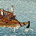
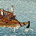

Requires
- Buildings:

- Arts:

- Resources:

Enables
- Units:


 



Basic Building Statistics (can be modified by difficulty level, arts, skills, traits and retainers)
- Cost: 4000
- +1 trade routes possible (sea)
- +2 per turn to town growth from ports within this province
- Improves export capacity (increases trade values) by +80
- Recruitment capacity (ship under construction): +3
Description
A good shipwright travels in his own ship.
A drydock is a basin that can be drained for shipbuilding work, and then flooded when a vessel is completed. This allows very large ships to be built and then gently floated away. With such a yard shipwrights can construct the largest and most powerful ships to add to a clan's navy. Historically, it was not until the Sengoku Jidai that the Japanese started building warships, but not for any national fleet. Once shipbuilding did get underway, the vessels produced were huge and resembled nothing quite so much as floating castles. Only six of the largest ships, the almost-legendary O-ataka bunes complete with iron armour, were ever built, probably because they were cripplingly expensive to build, man and maintain. Oda Nobunaga commissioned them and they were used at the Battle of Kizugawaguchi in 1578, where a fatal weakness was revealed. If they were boarded and the fighting meant that one side of the ship was too heavy, they had a nasty tendency to roll and capsize, taking everyone to the briny depths!